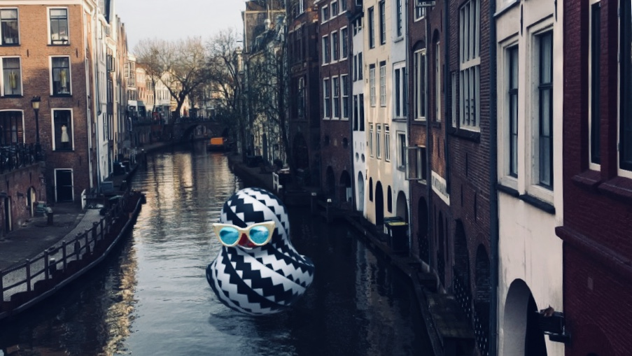

Marko,
pred slabim mesecem sem na Spotify-ju poslušal slovensko, domačo glabo in se spomnil na someščana Emkeja in z veseljem ugotovil, da sem "eno plato zadaj".
Od takrat se "Probaj Razumet" vrti brez prestanka. Kvaliteta posnetkov na plošči je neverjetno dobra! Na slušalkah za par evrov zveni super, med tem ko na čem boljšem pride do izraza res sound svetovnega razreda. Sami komadi, instrumentalno, takšni hooki, da te v trenutku prevzame in zasvoji. Zgodbe, besedila, od resnic, da se zamisliš, pa do for, smešnih za umret. Še zdaj se vsakič ob komadu Rdeče Oči na glas nasmejim pri lajnu "alo mala, bistra si ko gosti sok". Legendarno! Prvič, ko sem poslušal plato skozi in prišel do komada Hvala Hip-Hop in slišal mojstra, idola, Gary Vaynerchuck-a, sem vedel, da se ti moram zahvalit za to ploščo. Namreč zato, ker on poveličuje "gratitude in kindness". Tako da, najprej, lepa hvala za vrhunsko ploščo!
Dovoli mi, da ti kar se da na kratko predstavim idejo za "marketing stunt" ob prihajajočem 20. aprilu. Pred kratkim je aplikacija Snapchat omogočila kreatorjem, da sami ustvarijo t.i. leče oziroma 3D filtre, skupaj s katerimi uporabniki potem zajamejo fotografijo. S tem se trenutno sam ukvarjam, prilagam primer za lažjo predstavo:
Poleg 3D modelov in animacij je možno dodat tudi 15 sekundni zvočni posnetek. Na področju Slovenije je tvoj komaj "Neoš Ki" domala himna ljudi, ki kadijo travo. Predlagam torej naslednje; collab na slovenski "420 Snapchat leči"!
Sam močno verjamem, da bi kaj takega znalo fejst vžgat! V resnici je dosti bolj preprosto, težko je ubesedit idejo. V kolikor bi te to zanimalo, mi prosim javi, se morda slišiva na hitro po kakem Skypu ali podobnem, da dorečeva zadeve.
Želim ti lep dan in pošiljam pozdrav z Nizozemske,
Luka